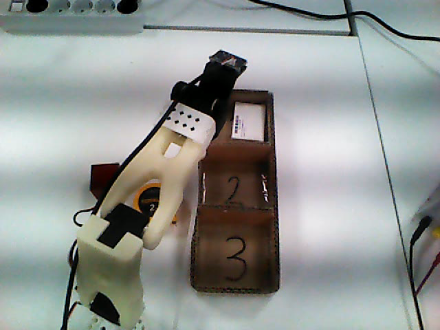
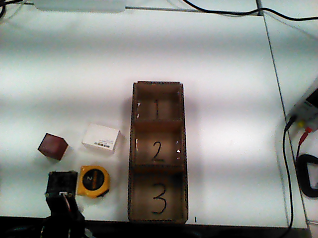
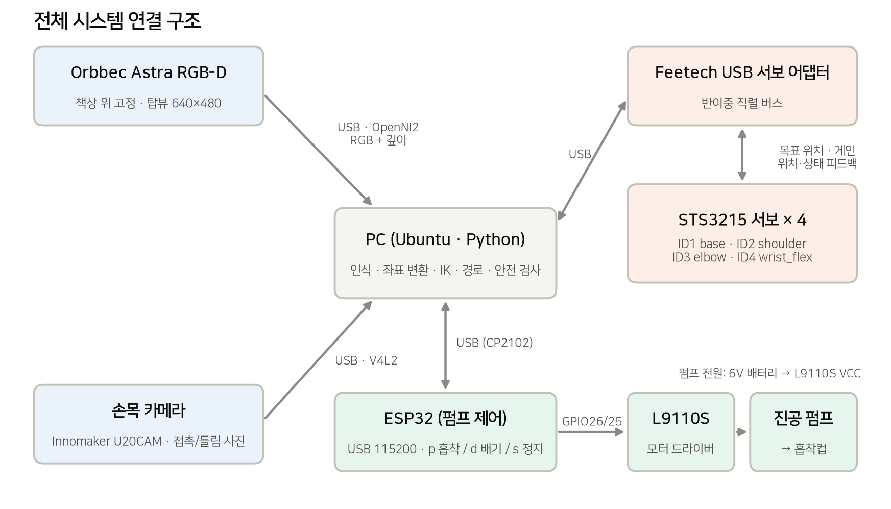
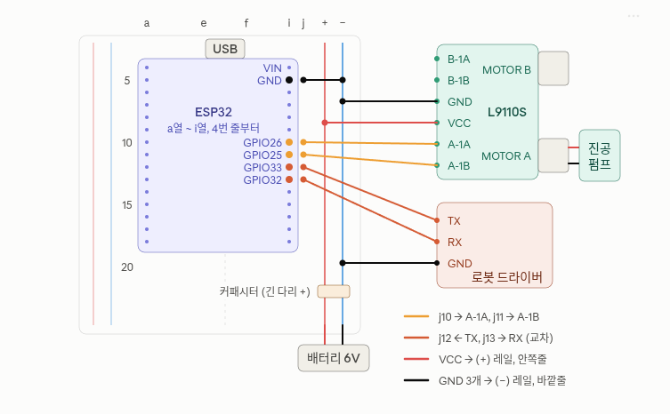
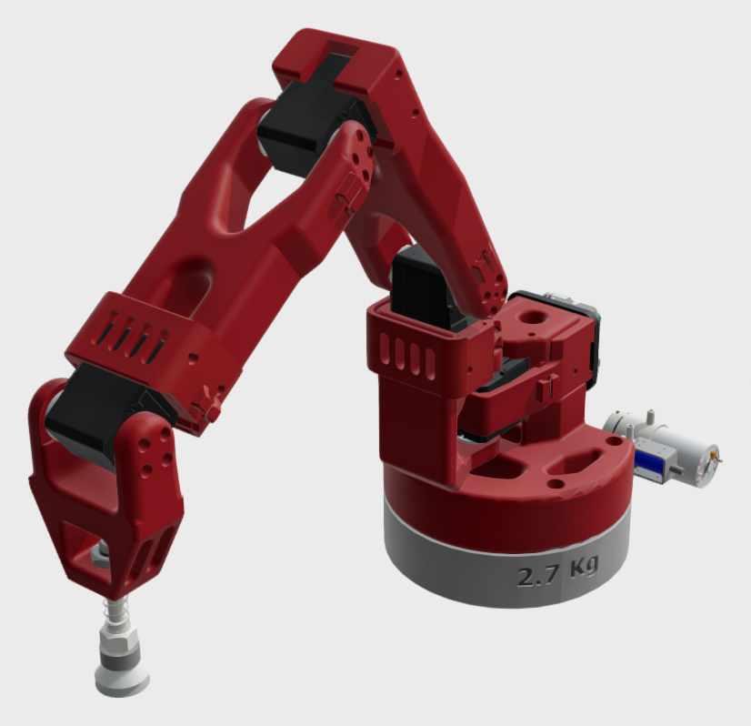
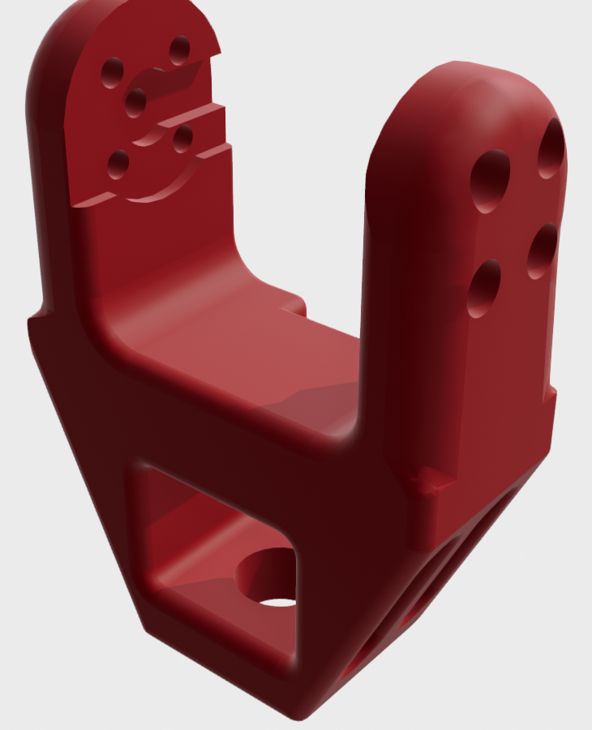
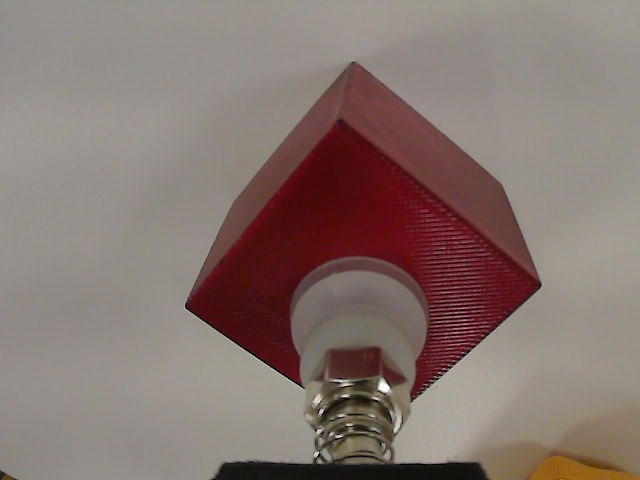
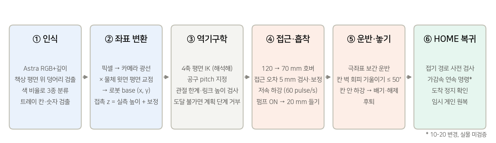
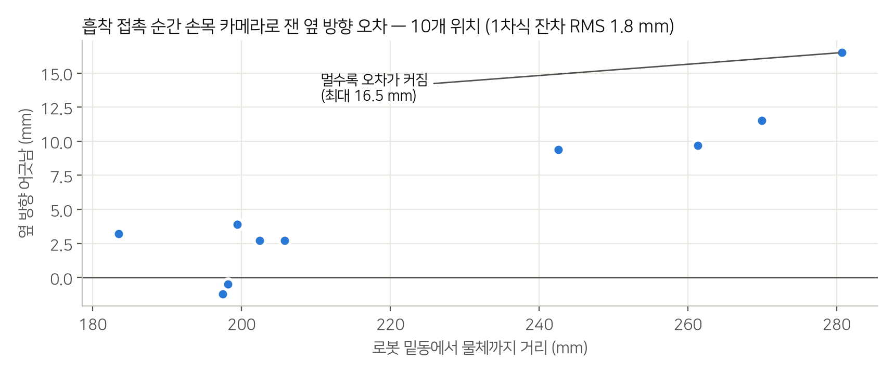
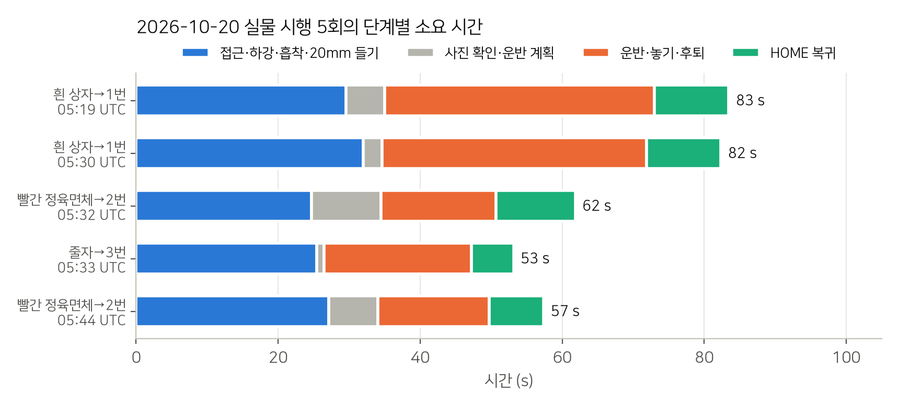

4축 로봇팔과 진공흡착 장치를 활용해 물체를 인식하고 트레이의 지정된 칸으로 옮기는 시스템을 구현했습니다. RGB-D 카메라의 관측값을 로봇 좌표로 변환하고, 역기구학으로 관절 목표를 계산하여 집기·운반·놓기·HOME 복귀를 연결했습니다.

수치는 실행 기록(output/의 result.json·events.jsonl)과 보정 파일에서 직접 계산한 값입니다. 코드 시험 통과와 실물 동작 성공은 구분해서 적었습니다.
책상 위 물체 세 종류를 카메라로 찾고, 진공흡착 로봇팔로 집어 3칸 트레이의 정해진 칸에 넣는 시스템입니다. 칸은 기본 규칙(흰 상자 1번, 빨간 정육면체 2번, 줄자 3번)을 따르고, "빨간 상자 3번 칸에 넣어줘"처럼 명령으로 지정하면 명령을 우선합니다. 트레이는 매번 다른 위치에 놓을 수 있어서, 사이클마다 새로 촬영해 물체와 칸의 위치를 다시 계산합니다.

| 항목 | 내용 |
|---|---|
| 입력 | 고정 RGB-D 카메라 1대(탑뷰), 손목 카메라 1대, 명령(물체 이름, 선택적으로 칸 번호) |
| 출력 | 물체를 지정 칸에 놓고 HOME 자세로 복귀 |
| 물체 | 빨간 정육면체 40×40×40 mm, 흰 상자 50×70×24 mm, 줄자 65×58×30 mm (자로 실측) |
| 트레이 | 길이 285 mm, 바깥 폭 120 mm(안쪽 105 mm), 벽 높이 55 mm, 3칸 |
| 정밀도 요구 | 정육면체가 칸 안에서 옆으로 약 27 mm, 길이 방향으로 약 17 mm 여유뿐이라 칸 중심 오차가 20 mm면 벽에 닿습니다. |
| 안전 원칙 | 계획 단계에서 도달·충돌을 먼저 검사합니다. 실패하면 다른 값으로 추측하지 않고 멈춥니다. 접촉·들기 속도는 흡착이 유지되도록 느리게 둡니다. |

PC 한 대가 모든 계산과 장치 제어를 맡습니다. ROS를 쓰지 않고 Python에서 Feetech 서보 버스를 직접 열어 목표 위치와 게인을 쓰고, 위치·상태 피드백을 매 틱(약 13 ms) 읽어 추종 오차와 충돌 높이를 감시합니다.
| 장치 | 연결 | 역할 |
|---|---|---|
| Orbbec Astra | USB · OpenNI2 | 탑뷰 RGB + 깊이(640×480). 물체·트레이 인식, 좌표 계산의 입력 |
| 손목 카메라 | USB · V4L2 (MJPG) | 흡착 직전 사진 5장, 20 mm 들기 후 사진으로 접촉 위치와 흡착 여부 기록 |
| 서보 어댑터 + STS3215 × 4 | USB → 반이중 직렬 버스 | ID1 base, ID2 shoulder, ID3 elbow, ID4 wrist_flex. 0–4095 pulse(1회전) |
| ESP32 | USB(CP2102) 115200 baud | p 흡착 / d 배기 300 ms 후 자동 정지 / s 정지 / q 식별 |
| L9110S + 진공 펌프 | GPIO26 → A-1A, GPIO25 → A-1B | 펌프 정·역 구동. 전원은 6 V 배터리에서 공급 |
메뉴(sort_menu.py)가 실행기(run_sort.py)를 부릅니다. 실행기는 매 시도마다 ① 계획기(plan_sort.py)로 카메라만 읽어 작업 파일을 만들고 ② 집기·놓기(pick_auto.py)를 실행합니다. 서보 버스와 펌프를 모두 닫은 뒤 ③ HOME 복귀(return_home.py)를 별도 프로세스로 실행합니다. 집기 후 흡착이 확인되지 않으면 종료 코드 3으로 끝나고, 실행기가 처음부터 다시 시도합니다. 그 밖의 실패는 재시도하지 않고 멈춥니다.
장치를 여는 프로세스와 계산만 하는 모듈을 분리했습니다. 인식·좌표·계획 모듈은 하드웨어를 import하지 않아서, 로봇 없이 저장된 영상으로 시험할 수 있습니다.
ESP32를 새 보드로 바꾼 뒤 기존 펌프 프로그램이 동작하지 않았습니다. 기존 플래시를 백업(SHA256 기록)한 뒤, PC 쪽 Python이 기대하는 p/d/s 프로토콜과 흡착 응답에 맞춰 펌웨어를 새로 작성·업로드했습니다(해시 검증 통과). 식별·흡착·정지 응답과 실제 펌프 구동을 확인했고, 부팅 시 출력 LOW, 배기 300 ms 후 자동 정지로 만들었습니다.

| 신호 | ESP32 | 빵판 | 연결처 |
|---|---|---|---|
| 펌프 방향 A | GPIO26 | j10 | L9110S A-1A |
| 펌프 방향 B | GPIO25 | j11 | L9110S A-1B |
| UART RX | GPIO33 | j12 | 서보 어댑터 TX |
| UART TX | GPIO32 | j13 | 서보 어댑터 RX |
| 공통 GND | GND | j5 | (−) 레일 |
UART는 RX↔TX를 교차로 배선했지만, 펌웨어에 서보 중계를 구현하지 않아 현재는 쓰지 않습니다. 팔은 PC의 USB 서보 어댑터로 직접 제어합니다. GND 세 개는 같은 (−) 레일을 공유합니다.



CAD 두 파일(SO101_진공흡착팔_조립체_v4.stp, SO100_손목_롤피치_v16.stp)은 공개된 SO-101 진공흡착 개조 설계를 받아 쓴 것이며 내용은 수정하지 않았습니다. 그림은 STEP을 메시로 변환해 렌더링했습니다. 실제 로봇은 흰색으로 출력했습니다. 직접 한 부분: 손목 카메라 장착, ESP32 교체와 펌프 펌웨어, 펌프 배선, 흡착컵 끝점(손목 축에서 약 110 mm)과 물체·트레이 치수 실측

깊이 영상에서 책상 평면을 맞추고, 평면 위로 솟은 덩어리를 물체 후보로 찾습니다. 덩어리 안의 색 비율로 빨간 정육면체·줄자(노랑)·흰 상자를 구분하고, 어느 쪽에도 충분히 맞지 않으면 추측하지 않고 unknown으로 둡니다. 깊이와 색 영상의 정합 오차 때문에 깊이 중심이 색 영상보다 일정하게 (+17, +5.5) px 치우쳐서, 그만큼 빼서 씁니다.
트레이는 벽(55 mm)과 칸막이를 깊이 높이로 찾습니다. 칸 번호는 손글씨 숫자를 읽어 정합니다. 해상도가 낮아(획 1–3 px) 글자 모양 비교로는 2와 3이 뒤바뀌어서, 회전에 영향을 받지 않는 구조 특징을 씁니다. 곧은 획 하나면 1, 가운데 분기점이 있으면 3, 둘 다 아니면 2입니다. 세 칸이 서로 다른 1·2·3이 아니면 읽기를 거부합니다. 칸에 물체가 들어가 바닥이 가려질 때를 대비해 빈 트레이 프레임을 저장해 두고, 트레이가 밀리면 모서리 정합으로 회전·이동량을 구해 저장한 칸 위치를 옮겨 씁니다.
물체 윗면 중심 픽셀을 카메라 내부 파라미터로 광선으로 바꾸고, 물체 윗면 높이의 평면과 만나는 점을 로봇 base 좌표 (x, y)로 씁니다. 카메라 외부 파라미터(자세)는 팔을 자로 써서 맞췄습니다. 팔을 70 mm 높이로 8곳에 띄우고, 정기구학(FK)으로 계산한 흡착컵 위치에 상자를 놓은 뒤, 팔을 HOME으로 치우고 촬영했습니다. 상자 픽셀과 FK 좌표 8쌍으로 자세만 맞췄습니다(내부 파라미터 고정). 접촉 높이 z는 자로 잰 물체 높이에 흡착컵 보정값(−3.5 mm)과 밀착용 추가 누름(3 mm)을 반영해 정합니다.
base가 돌고 나머지 세 축(shoulder·elbow·wrist_flex)은 같은 수직 평면에서 움직이므로, 공구 각도 φ를 정하면 해석해로 풀 수 있습니다.
| 기하 값 (8자세 맞춤) | 값 |
|---|---|
| L₁ 어깨–팔꿈치 | 113.4 mm |
| L₂ 팔꿈치–손목 | 132.6 mm |
| L₃ 손목–흡착 끝 | 102.0 mm |
| r₀, h₀ 어깨 위치 | 27 mm, 160 mm |
| FK 잔차 RMS (맞춤 전 → 후) | 5.97 → 1.28 mm |
두 해(팔꿈치 위·아래) 중 관절 한계 안의 해만 남기고, 경로를 샘플링해 링크 높이가 책상과 물체 위에 있는지 검사합니다. 관절 영점과 링크 길이는 8개 자세의 실측으로 다시 맞췄습니다.
| 단계 | 동작 | 안전·정확도 장치 |
|---|---|---|
| 접근 | 120 mm, 70 mm 호버에서 차례로 정지. 300 pulse/s, 13.4 ms 틱 | 도착 위치 오차 5 mm 검사, 20 mm 이내면 1회 보정 |
| 하강·흡착 | 60 pulse/s 저속 하강, 펌프 ON, 접촉용 게인(P64) | 최소 접촉 높이 10 mm, 손목 사진 5장 기록 |
| 들기·확인 | 20 mm 들어 올린 뒤 손목 사진 비교 | 붙지 않았으면 놓기 없이 복귀 → 재시도 |
| 운반 | base 기준 극좌표 보간(각도 일정 속도, 반경·높이 선형). 운반 높이 105–115 mm | 주변 물체 높이·반경을 장애물로 검사 |
| 놓기 | 칸 벽을 피해 공구를 최대 50° 기울임, 칸 안으로 하강 후 배기 | 벽 높이 55 mm + 물체 크기로 하강 높이 계산 |
| HOME 복귀 | 수직 상승 → 접어서 복귀 → 도착 정지 확인 → 임시 게인 원복 | 전체 경로 사전 검사, 추종·취소·시간 제한 |
실물 시험마다 서보 피드백(목표·실제 위치, 매 틱)과 단계별 결과를 파일로 남기고, 문제가 생기면 이 기록과 코드를 대조해 원인을 확인한 다음 고쳤습니다. 한 번에 한 변수만 바꿨고, 실물로 확인하지 못한 변경은 따로 표시했습니다.

흰 상자를 1번 칸에 넣는 한 사이클을 Astra 탑뷰로 녹화했습니다(2026-10-16, 실제 시간 약 85 s). 단계마다 자막을 넣은 2배속 영상과 README용 4배속 GIF를 함께 제공합니다.
media/demo_pick_place_2x.mp4 (42 s)media/demo_pick_place_4x.gif자막의 단계 구분은 영상 프레임 시각과 서보 이벤트 기록의 시각을 맞춰 넣었습니다. 이 영상에는 HOME 복귀 장면이 없습니다(복귀는 별도 프로세스로 기록).
| 시각(UTC) | 물체 → 칸 | 접근~들기 | 놓기 | HOME | 합계 | 사이클·해제·복귀 |
|---|---|---|---|---|---|---|
| 05:19 | 흰 상자 → 1 | 29.5 s | 37.9 s | 10.5 s | 83.5 s | 완료 |
| 05:30 | 흰 상자 → 1 | 32.0 s | 37.2 s | 10.5 s | 82.4 s | 완료 |
| 05:32 | 정육면체 → 2 | 24.7 s | 16.2 s | 11.2 s | 61.8 s | 완료 |
| 05:33 | 줄자 → 3 | 25.5 s | 20.7 s | 6.0 s | 53.2 s | 완료 |
| 05:44 | 정육면체 → 2 | 27.1 s | 15.7 s | 7.6 s | 57.4 s | 완료 |
합계는 집기 시작부터 놓기 후퇴까지 기록된 시간(사진 확인·운반 계획 포함)에 HOME 복귀 이동 시간을 더한 값입니다. HOME 시간은 복귀 이벤트 기록의 처음과 끝 시각 차이입니다. 앞의 세 회는 중간 경유점을 거쳤고, 뒤의 두 회는 출발 자세가 가까워 한 구간으로 복귀했습니다.
실행 기록의 physical_pick_success 값은 비어 있습니다. 압력 센서와 칸 안착 판정이 없기 때문입니다. "사이클·해제·복귀 완료"는 로봇이 계획한 동작을 오류 없이 마쳤다는 뜻이고, 물체가 칸에 들어갔다는 뜻은 아닙니다.

| 지표 | 값 | 측정 방법 |
|---|---|---|
| 기구학 모델 잔차 (영점·링크 맞춤 후) | RMS 1.28 mm 최대 2.14 mm | 8개 자세의 FK 위치와 기준 위치 비교 (맞춤 전 RMS 5.97 mm) |
| 카메라 → 로봇 좌표 변환 | 교차검증 RMS 6.2 mm 최대 8.2 mm | 팔 FK 8점 중 하나씩 빼고 맞춘 뒤 뺀 점 예측 |
| 접촉 순간 옆 방향 오차 (보정 전) | −1.2 – 16.5 mm | 손목 카메라 접촉 사진, 10곳, 반경에 비례 |
| 하강 중 위치 보정량 (10-20, 5회) | 1.5 – 2.4 mm | 엔코더 기반 FK와 목표의 차이 |
| 접근 도착 기준 | 5 mm | 넘으면 1회 보정, 다시 넘으면 정지 |
위 정확도는 엔코더 기반 FK와 카메라로 계산한 값입니다. 자나 외부 측정 장비로 흡착컵 끝 위치를 직접 잰 값이 아니므로, 실제 공구 끝 오차는 이보다 클 수 있습니다.
집기 단독 사이클은 초기 207 s(2026-10-12)였습니다. 공간 이동 구간만 빠르게 하고 접근을 연속 경로로 바꿔 약 100–128 s로 줄였습니다. 이후 놓기와 HOME 복귀를 붙인 전체 사이클이 53–83 s입니다(10-20). 접촉·들기 속도는 흡착 유지를 위해 처음부터 올리지 않았습니다. 들기 속도를 두 배로 올렸을 때 상자가 들리지 않은 기록이 있습니다.
| 영역 | 내용 |
|---|---|
| 시스템 설계 | 장치 구성, 프로세스 분리(계획·실행·복귀), 안전 원칙과 실패 시 처리 방식 결정 |
| 하드웨어 | 로봇·흡착부 조립, 손목 카메라 장착, ESP32 교체와 펌프 펌웨어, 배선 |
| 측정·보정 | 물체·트레이·흡착컵 치수 실측, 카메라 재보정 점 배치·촬영, 관절 영점·HOME 등록 |
| 소프트웨어 | 인식, 좌표 변환, 역기구학, 모션·놓기 계획, 메뉴 |
| 시험·분석 | 실물 시험 운영과 성공·실패 판정, 실행 기록 분석으로 원인 확인 |
구현에는 AI 코딩 도구(Codex, Claude Code)를 활용했습니다. 요구사항과 설계 결정, 실물 시험과 결과 판정은 직접 수행했습니다.
| 명령 | 설명 |
|---|---|
python scripts/sort_menu.py | 번호 메뉴(물체 넣기, HOME 복귀, 빈 트레이 저장, 종료). 로봇이 움직이는 항목은 한 번 더 확인 |
python scripts/plan_sort.py --command "빨간 상자 3번 칸에 넣어줘" | 카메라만 읽고 작업 파일과 실행 명령을 출력 |
python scripts/run_sort.py --execute --supported --object red_cube | 계획 → 집기 → 놓기 → HOME. 흡착 실패면 다시 시도 |
python scripts/save_tray_frame.py | 빈 트레이 위치 저장(칸이 가려질 때 사용) |
python scripts/return_home.py | 현재 자세에서 HOME 복귀 |
| 폴더 | 역할 | 파일 |
|---|---|---|
| camera/ | Astra 촬영, 카메라 보정, 손목 영상·접촉 관찰 | 5 |
| perception/ | 물체 분류, 집기 목표, 위치 보정 | 4 |
| tray/ | 트레이 검출, 칸 번호, 저장 프레임 정합 | 4 |
| robot/ | 좌표계, 4축 기구학, 도달 검사 | 3 |
| hardware/ | 서보 통신·제어, 관절 매핑, 궤적 검증, 진공 펌프 | 5 |
| motion/ | 접근·HOME 복귀, 정지·집힘 확인, 게인 | 8 |
| sorting/ | 작업 실행, 운반·놓기 계획, 후속 복귀 | 7 |
| scripts/ | 메뉴, 계획, 실행, 복귀, 보정 도구 | 10 |